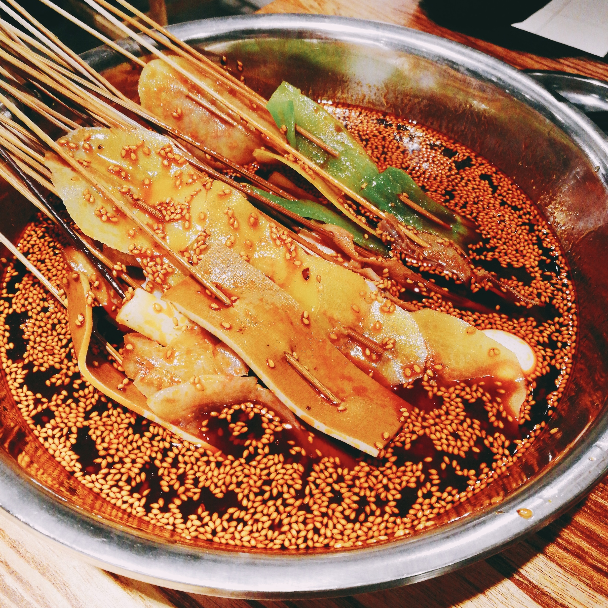
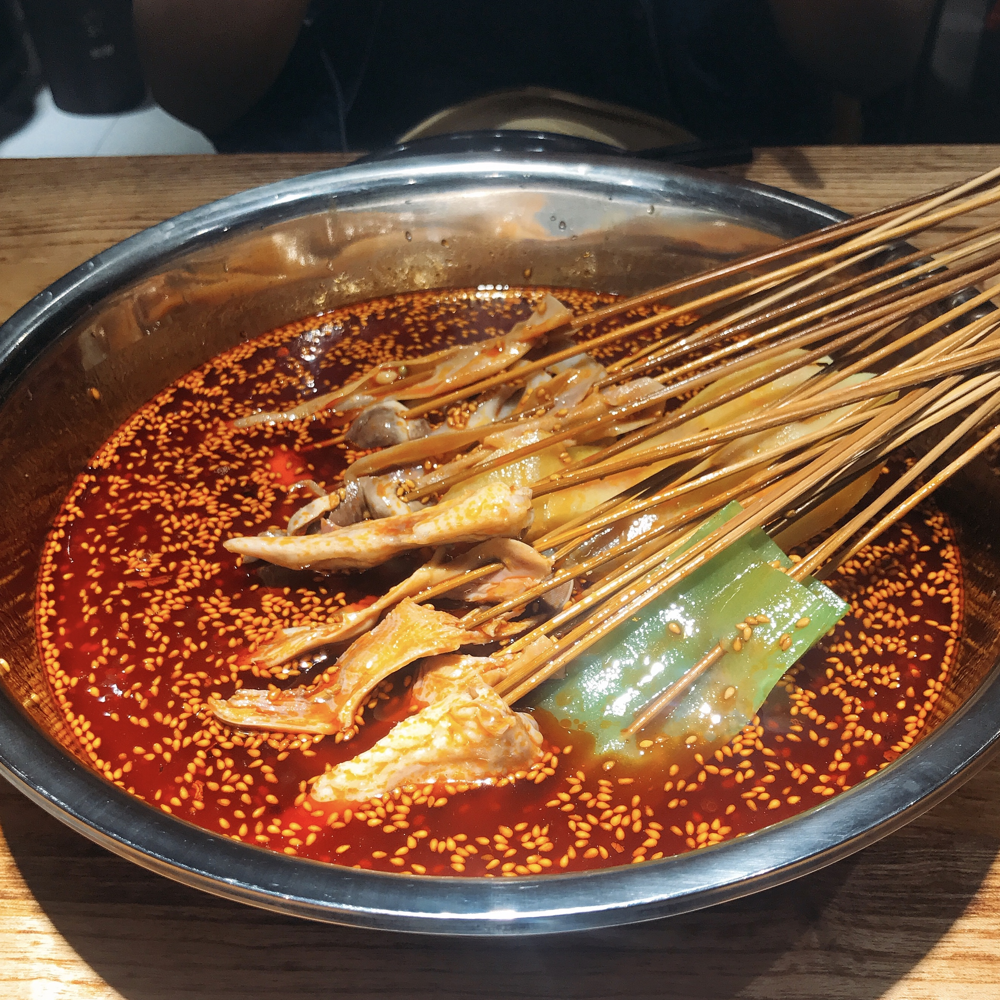
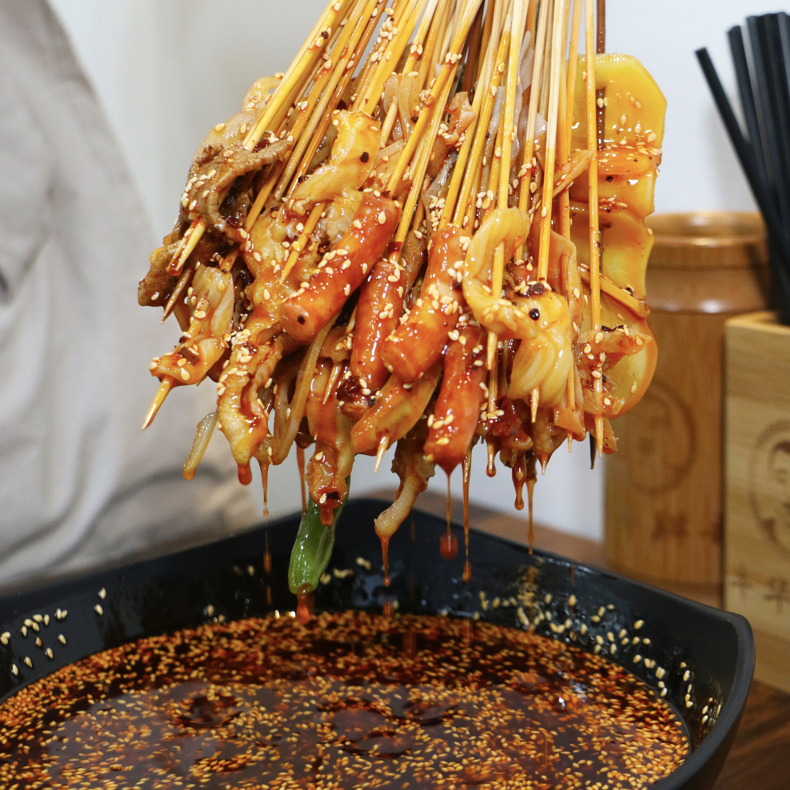

钵钵鸡，是源于四川乐山的汉族特色小吃，属于川菜系。此菜一听其名，就觉得很新奇，“钵钵”其实就是瓦罐，钵外面是画着红黄相间的瓷质龙纹，钵内盛放配以麻辣为主的佐料，菜品在特殊加工后用签串制，晾冷浸于各种口味的佐料中，食用时自取自食，除味道悠长外更添情趣盎然。
  
乐山本地的土鸡种，敞放于乡下山腰，稻田偷谷、林下啄虫，一身跑跑肉，嫩香无比，就是骨头渣渣都是极耐咀嚼的。那种关在笼子里用饲料喂养的商品鸡，吃起来像嚼木头，毫无鸡的味道。关于钵钵鸡的香味，还有一个重要的原因就是调料——藤椒油的运用。藤椒油几乎就是为烹调钵钵鸡而天生的。洪雅的山丘区，出产一种像藤萝的野花椒树，据说其他地方不产这种果树，未曾考证过，宁可这样深信不疑，家乡嘛。四月的藤椒果，由青而紫，玲珑剔透，挂在树上都是诱人的。摘来鲜果，盛于陶钵，将热菜油浸淋，辅以鲜芋荷叶、芭蕉叶遮蔽香气。这个程序叫“闭藤椒油”，注意是“闭”，而不是“熬”，虽然“闭”太白太实在，也许实在的往往是不可替代的。藤椒油，“麻辣不见椒（麻：花椒；辣：辣椒）”。晶莹翠绿，麻而不腻，清香浸人，甚至能香透一条街。以藤椒油拌和的鸡肉，紧跟在奇香后面的，是一股山野的浸人清凉。要是换成花椒油、辣椒油，上火不说，色香味就大不如，而且满盆都是喧宾夺主的椒末，就根本不能叫“钵钵鸡”了。